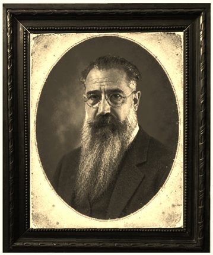

SEbastien OCCHIPINTI
" Trop de thérapeutes essayent de rassurer leurs patients ; ils essaient de déposséder leurs patients de la réalité de leurs symptôme plutôt que d'accepter et de travailler avec cette réalité. " Milton ERICKSON
LE SUGGESTIONNEUR
Je suis :
C'est à l'issue de six années de formation dans les sciences humaines où j'ai été initié à différents courants psychothérapiques (T.C.C., systémie familiale, psychanalyse) ainsi qu'à la psyhopathologie clinique, et suppléménté d'une riche expérience de plus de 15 ans dans le domaine de la psychiatrie et de l'addictologie que j'ai choisi de m'orienter dans la communication Ericksonienne.
L'hypnose est à mon regard une communication puissante avec soi-même pour soi ! Je comprends cette approche langagière comme le fait de s'approprier ses propres ressources, même si elles peuvent paraître être consciemment inexistantes. En ce sens, L'hypnose favorise la perception de "l'inconsciemment je", un facilitateur rendant possible un autre rapport à soi.
Mon cursus universitaire et mon expérience professionnelle m'ont permis de me spécialiser dans les addictions et les traumatismes. Egalement formé à la psychopathologie clinique, ceci complété par quelques années en tant que sport-thérapeute dans les champs de la psychiatrie et de l'addictologie, je suis à même de pouvoir être à votre écoute efficacement. Par choix de maintenir et enrichir mes connaissances pluridisciplinaires, j'exerce également actuellement l'hypnose à l'hopital.
Accompagner :
Accepter d'accompagner les gens dans l'éclaircissement de leur problématique passe par une philosophie personnelle.
J'ai choisi :
C'est à l'issue de six années de formation dans les sciences humaines où j'ai été initié à différents courants psychothérapiques (T.C.C., systémie familiale, psychanalyse) ainsi qu'à la psyhopathologie clinique, et suppléménté d'une riche expérience de plus de 15 ans dans le domaine de la psychiatrie et de l'addictologie que j'ai choisi de m'orienter dans la communication Ericksonienne.
L'hypnose est à mon regard une communication puissante avec soi-même pour soi ! Je comprends cette approche langagière comme le fait de s'approprier ses propres ressources, même si elles peuvent paraître être consciemment inexistantes. En ce sens, L'hypnose favorise la perception de "l'inconsciemment je", un facilitateur rendant possible un autre rapport à soi.
Mon cursus universitaire et mon expérience professionnelle m'ont permis de me spécialiser dans les addictions et les traumatismes. Egalement formé à la psychopathologie clinique, ceci complété par quelques années en tant que sport-thérapeute dans les champs de la psychiatrie et de l'addictologie, je suis à même de pouvoir être à votre écoute efficacement. Par choix de maintenir et enrichir mes connaissances pluridisciplinaires, j'exerce également actuellement l'hypnose à l'hopital.
Accompagner :
Accepter d'accompagner les gens dans l'éclaircissement de leur problématique passe par une philosophie personnelle.
J'ai choisi :
- d'être moi-même, sans faux semblant car, à mon sens, la réussite de l'accompagnement est le produit de la confiance, de l'authenticité, de la sincérité et de l'alliance entre le praticien et le client.
- d'être et de rester disponible afin de renforcer le travail de changement que vous entreprenez. Je ne compte pas mon temps passé et je vous recontacte systématiquement quelques jours après la consultation.
- de ne pas proposer des séances d'accompagnement plus qu'il n'en faut. Si une séance supplémentaire est nécessaire pour approfondir le travail, elle sera planifiée lorsque je vous rappelerai, quelque jours après la dernière séance. Votre libre arbitre et votre ressenti me sont primordiaux.
Conviction :
L'hypnose Ericksonienne fait partie des approches thérapeutiques dites orientées "solution". En effet, bien souvent les personnes qui se sentent freinées dans leur avancée de vie cherchent à savoir pourquoi elles sont entravées et non comment elles pourraient considérer différement ce ralentissement existentiel. Envisagez ici que le "pourquoi" fige dans la problématique alors que le "comment" met en mouvement. La recherche d'une compréhension n'est en rien l'obtention d'une solution.
Autre que d'accompagner les personnes qui sont dans cette démarche solutionnante, ma conviction thérapeutique me guide à les aviver, les "pousser" vers elles-mêmes, dans la ré-accession de leurs ressources, leurs valeurs, leurs émotions et leur identité.
L'hypnose Ericksonienne fait partie des approches thérapeutiques dites orientées "solution". En effet, bien souvent les personnes qui se sentent freinées dans leur avancée de vie cherchent à savoir pourquoi elles sont entravées et non comment elles pourraient considérer différement ce ralentissement existentiel. Envisagez ici que le "pourquoi" fige dans la problématique alors que le "comment" met en mouvement. La recherche d'une compréhension n'est en rien l'obtention d'une solution.
Autre que d'accompagner les personnes qui sont dans cette démarche solutionnante, ma conviction thérapeutique me guide à les aviver, les "pousser" vers elles-mêmes, dans la ré-accession de leurs ressources, leurs valeurs, leurs émotions et leur identité.
MON CURSUS
- Psychotraumas et addictions ( I.R.E.M.A.)
- Maître Praticien en hypnose Ericksonienne diplômé de l'A.R.C.H.E (Académie de Recherche et Connaissance en Hypnose Ericksonienne)
- praticien en P.N.L. (A.R.C.H.E.)
- diplômé d'études supérieures universitaire en psychopathologie clinique et psychothérapies (Paris 8)
- diplômé d'études supérieures universitaire en toxicomanies et addictions (Paris 8)
- diplômé inter universitaire en psychopathologie sur les affections neurologiques (Paris 6 & 8)
- master 1 en Psychanalyse (Paris 8)
- formé à l’hypnose conversationnelle (A.R.C.H.E.)
- formé à l’analyse comportementale (A.R.C.H.E.)
- formé au Retraitement de l'Information Traumatique par les Mouvements Oculaires (R.I.T.M.O.®)
Mise à jour des connaissances :